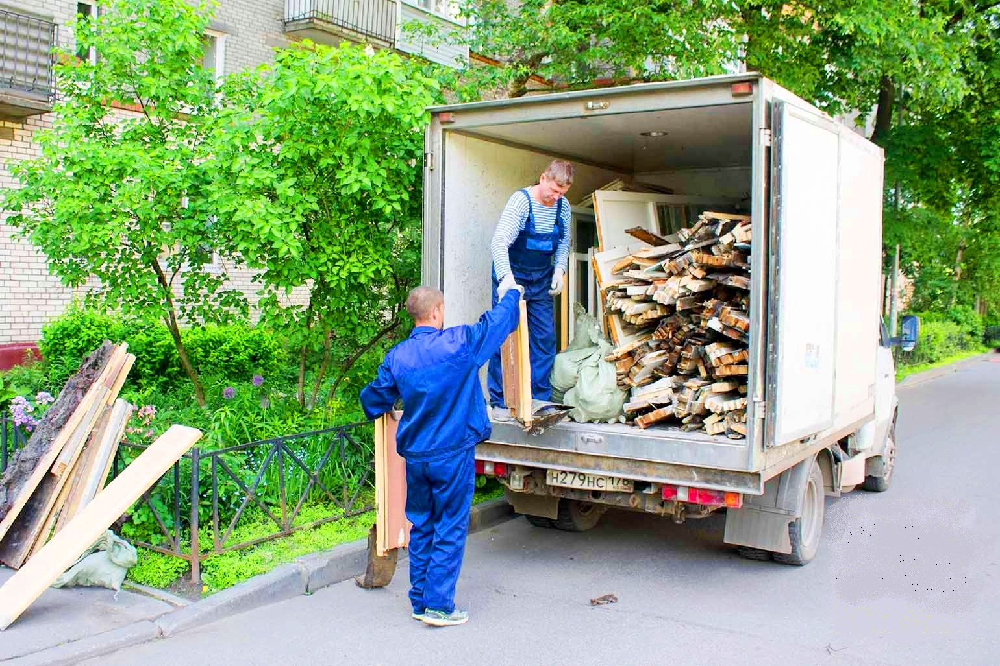

Уборка строительного мусора
 Строительные работы сопровождаются огромным количеством мусора, который в последствии необходимо вывозить.Чтобы не тратить свое время уборку на строительном объекте стоит доверить разнорабочим. Мы их предоставляем по выгодным ценам.
Какие работы выполнят наши рабочиеМы предоставляем разнорабочих для уборки строительной площадки в короткие сроки. Наши сотрудники могут выполнить следующие задачи:
- Расчистить территорию и помещения от мусора.
- Вывезти старую мебель, бытовую технику и сантехнику.
- Упаковать мусор в мешки, контейнеры и т.д.
- Демонтировать различные элементы при необходимости.
- Погрузить мусор в соответствующую машину.
- Спустить мусор с этажа или вынести склад, помещение и т.д.
Нанять рабочих после строительных работ уборка не станет чем-то сложным. Они быстро отсортируют мусор по различным видам, упакуют его и загрузят в специализированный транспорт для дальнейшего вывоза. Мы гарантируем, что сотрудники выполнят работу в точно оговоренные сроки и не будут затягивать процесс.
Почему стоит заказывать разнорабочих на уборку у насМы аутсорсинговая компания, предоставляющая разнорабочих на все случаи жизни. Наши работники выполняют различные задачи, упрощая тем самым работу узкоспециализированным специалистам, так как они не отвлекаются на посторонние вещи и процессы. Наши клиенты получают выгодные условия сотрудничества, о чем свидетельствуют многочисленные отзывы. Ключевыми плюсами работы с нами можно назвать:
- Наличие системы скидок и кэшбека до 10%. Они предоставляются при крупных заказах.
- Оптимальные цены на услуги. Прайс-лист указан на сайте. Вы можете самостоятельно рассчитать, сколько будет стоить нанять разнорабочих.
- Предоставляем работников, исключительно граждан РФ. Все документы у них на руках, а потому никаких проблем с проверками не будет.
- Быстрое реагирование. Если вам срочно нужна уборка мусора на объекте/стройке, пришлем работников в течение пары часов.
- Качественное выполнение поставленных задач. Наши сотрудники работают на совесть и пропускают мусор.
Уборка строительной территории достаточно долгий процесс, так как мусора накапливается много, а вывозят его автотранспортом. Поэтому нередко требуются работники, которые смогут быстро собрат, рассортировать и погрузить строительные отходы, не задерживая спецтранспорт. Это позволяет оптимизировать расходы на очистку площадки.
Оформление заказа и оплатаМы работаем с физическими и юридическими лицами. Поэтому предоставляем удобные способы оплаты. Провести расчет можно наличным и безналичным способом по окончанию выполнения работ нашими сотрудниками. Оформить заказ на уборку строительной площадки можно по контактным данным, предоставленным на сайте. Мы доступны по телефону, электронной почте и в мессенджерах. Обратите внимание, что есть контактные данные для консультаций, а есть те, которые связывают с бухгалтерией.
12.08.2022